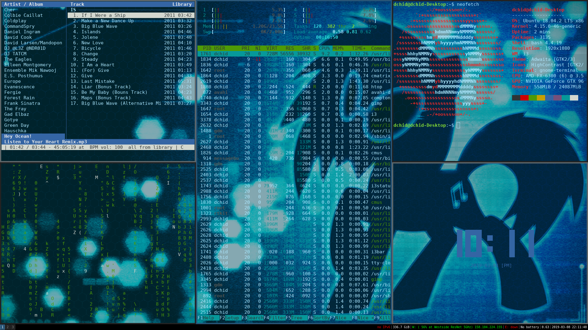

For the last several decades, the standard desktop GUI has looked something like this: a “desktop wallpaper with colorful icons, and rectangular windows layered on top of the desktop and each other. This familiar setup is called a “floating window manager” and you may be using one as you read this right now. But are floating window managers really the best solution for everyone? The most frequently used computers today, smartphones, don’t typically use tiling window managers. Should we really be using standard desktop environments simply because Microsoft and Apple copied a GUI design from Xerox before many of the people reading this were even born? A popular alternative has arisen in the form of the tiling window manager. Tiling WMs such as i3, Awesome WM, and Xmonad have garnered popularity within the GNU Linux community due to their simplicity and innovation. How they work is simple. Instead of having overlapping rectangular windows layered on top of each other, tiling WMs subdivide a rectangular screen into spaced for the rectangular windows, meaning no windows will ever be layered on top of each other. Since this can be a little difficult to picture, you can see my personal setup bellow.
Why might this be appealing? I came up with four benefits to using a tiling wm instead of a traditional floating WM:
Tiling WMs are not only gaining popularity on Unix like operating systems, but on Windows and Mac OS as well. Microsoft recently released a tiling window manager called fancy zones as a part of its new “power toys” suite of programs. It’s an official release from Microsoft and allows Windows users to rapidly stitch between tiling and floating windows. A third-party tiling WM called chunkywm is available on Mac OS.
Tiling WMs certainly aren’t for everyone; they have a steep learning curve and appeal primarily to computer enthusiasts who take pride in customizing their UIs to something suited exactly for them. It is however, time to reconsider the dominance of bloated GUIs and floating WMs on traditional PCs ask if we are over reliant on them. One thing I can say with confidence is that I like my setup with i3, and I’ve been able to enjoy using my computer more when I don’t have bloated GUIs in my way.